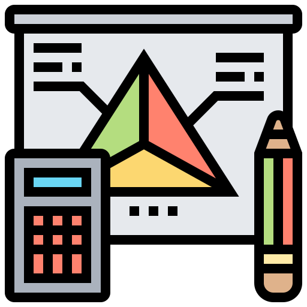
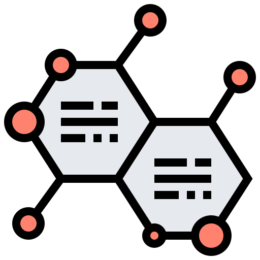

The STEM Gap:
Self-Confidence and its Relationship with Gender Bias
While more women are showing an interest in science, technology, engineering, and mathematics, there is still a marked difference in the number of men versus women that persist in these fields.
Click the icons below for more. 

- 
- 